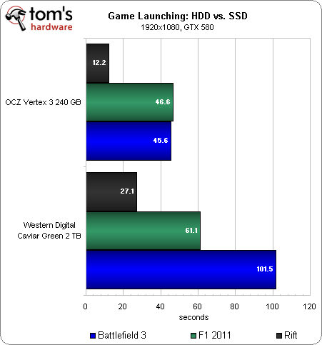

A PC with an SSD will boot in less than a minute sometimes even only 10 seconds. This is because a hard drive requires time to spin up to the operating speed. When a computer is in the “sleep” state the disk is not spinning and when the user wakes up the computer the motor will have to spin up again, thus resulting in slow wake up times. As SSDs run much faster launching and running applications will be much faster. Since, read and write speeds are faster than a traditional HDD opening and transfering files will be faster. SSDs are good for the little data transactions that happens all the time inside of an operating system. For example; When you open an application or game the app/game has to go around searching for a bunch of little files. In this case the SSD will be much faster as it can retrieve files much faster. This will improve the system responsiveness of any system equipped with an SSD.
According to the grah, you can see that loading games on an SSD is much faster than a HDD. Espaccially when it comes to big games with lots of files like Battlefield 3.
For a $160 you can get a 256GB SSD if you favour speed more than storage capacity, ot you can get a 4TB hard drive if you more concerned about the storage capacity and not much about speed of acessing the data.
As SSDs have no moving parts they are inevitably more durable are are more likely to keep the data stored in case the device gets dropped or is subjected to sudden impact. SSDs also last longer that HDDs because there are no moving parts and there is nothing to wear out.